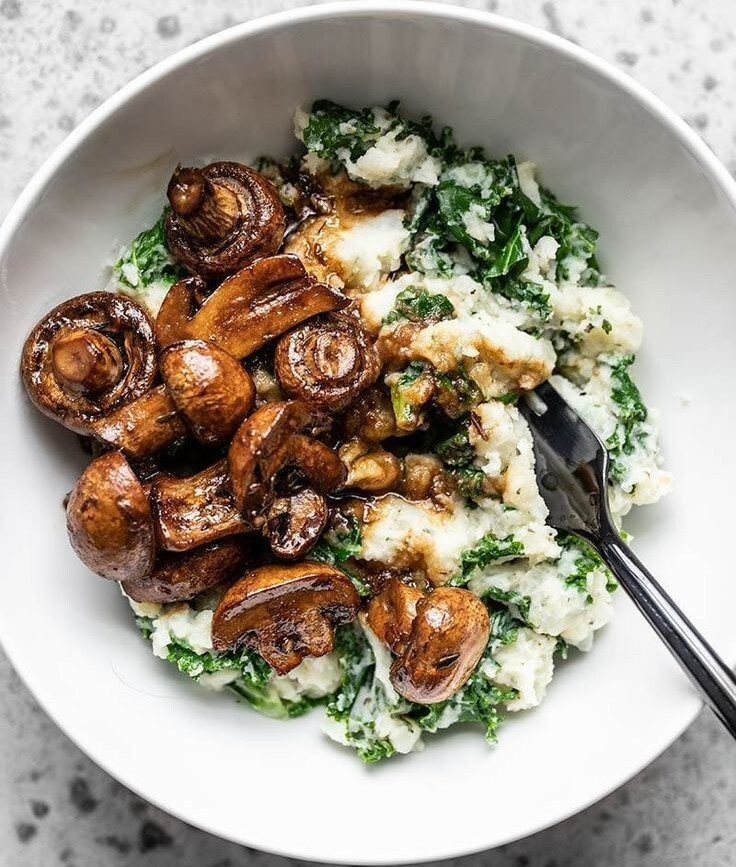
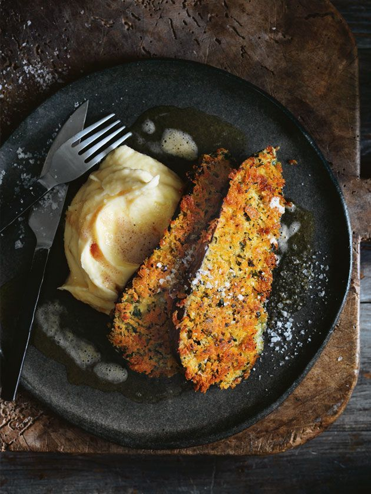
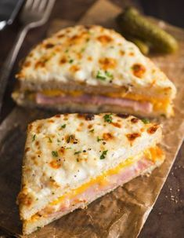
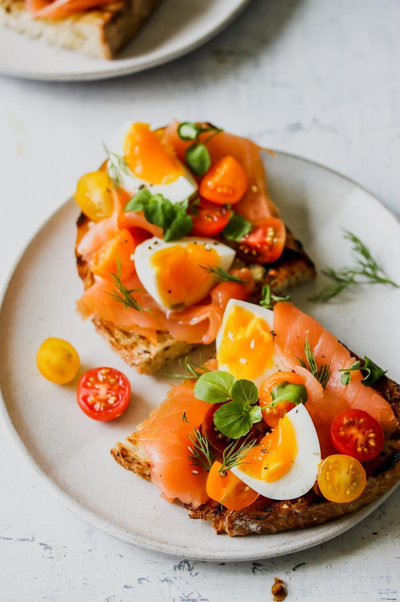
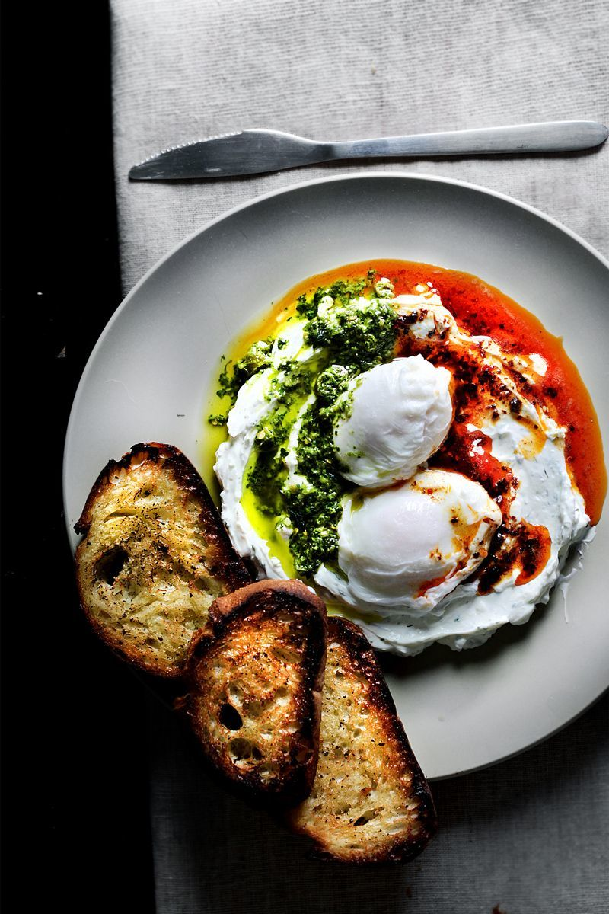
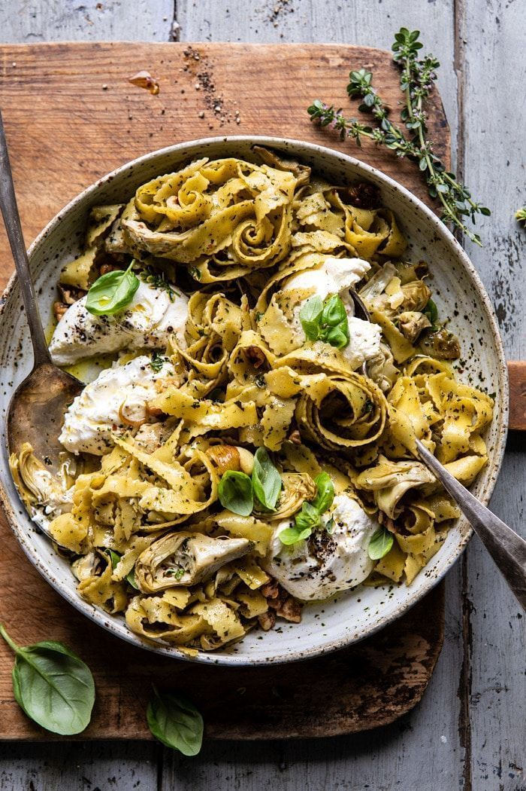
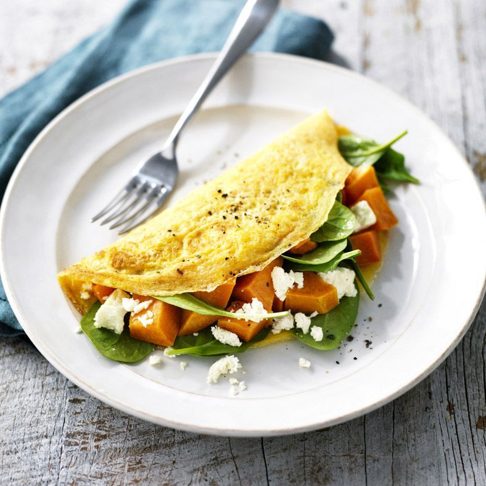

Inicio
Mis recetas
Consejos
Comunidades
Mi menú
Guarda las recetas que más te gusten

Risotto de hongos con hierbas
Ver receta
Risotto de hongos con hierbas
Pele y pique el ajo, cebolla y echalote.
Limpie los hongos con un trapo húmedo y retire la parte inferior del pie de ellos y cortelos en láminas
Ponga a calentar el caldo de verduras.
En una sartén con paredes altas derrita la manteca junto con el aceite de oliva.
Agregue el ajo y el echalote.
Cocine durante 5 minutos.
Agregue la cebolla.
Cocine todo hasta transparentar bien. Salpimiente.
Agregue los hongos.
Cocine hasta que el agua de los hongos se haya evaporado.
Incorpore el arroz.
Cocine hasta que esté transparente. Éste procedimiento se llama nacrar.
Agregue el vino blanco.
Deje que se evapore casi en su totalidad.
Asegúrese de que se haya evaporado el alcohol del vino antes de empezar a trabajar el risotto.
Vuelva a salpimentar.
Vaya agregando de a tres cucharas el caldo de verduras y revuelva constantemente el arroz con ayuda de una cuchara de madera (No agregue más caldo hasta que el que el último cucharón incorporado se haya evaporado).
Dos minutos antes de que éste en su punto justo, agregue la manteca fría y el queso parmesano y mezcle bien.
Deje reposar y al servir agregar las finas hierbas picadas por encima.
Agregar

Berenjenas empanadas con puré
Ver receta
Berenjenas empanadas con puré
Lavamos bien las berenjenas, las cortamos en rodajas del mismo grosor y las colocamos en un recipiente con agua y abundante sal. Las dejamos reposar durante media hora para que las berenjenas empanadas fritas no queden amargas.
Proast el tiempo de reposo, secamos las rodajas de berenjena con papel absorbente y preparamos los ingredientes para rebozarlas. Así pues, en un plato batimos los huevos, en otro colocamos la harina y en un tercero el pan rallado. Si quieres, puedes añadir alguna especia que sea de tu agrado al plato del pan rallado y mezclar, como perejil, romero, tomillo u orégano.
Cuando esté todo listo, pasamos las rodajas primero por el huevo, luego por la harina y, por último, por el pan rallado. Hecho esto, y una vez que el aceite esté caliente, freímos las berenjenas empanadas.
Reservamos las berenjenas rebozadas fritas sobre papel absorbente para retirar el exceso de aceite y listo. En apenas unos minutos habremos preparado un plato sencillo y lleno de sabor, perfecto para servir durante la cena con salsa de tomate y crema agria, como entrante o acompañamiento de una pechuga de pollo a la plancha o filetes de tofu si seguimos una dieta vegetariana.
Agregar

Tarta de Jamón y Queso
Ver receta
Tarta de Jamón y Queso
La masa para la tarta puedes comprarla ya preparada en cualquier supermercado o hacerla tú mismo siguiendo los pasos de esta sencilla receta de masa para empanadas. Cuando la tengas, engrasa el molde que vayas a utilizar y fórralo con la masa. Para ello, deberás estirarla previamente con un rodillo hasta formar una capa fina. Recuerda que deberás cubrir la tarta con más masa, por lo que si la haces ten en cuenta este detalle para no quedarte sin masa.
Reserva el molde con la masa y disponte a preparar el relleno. Para hacerlo, deberás cocer tres huevos y batir los otros cuatro. Luego, pela el tomate, retira las semillas y córtalo en cuadrados pequeños
Coge un recipiente y mezcla el jamón, el queso, el tomate y los huevos cocidos troceados. Después, añade sal y pimienta a los huevos batidos y mézclalos con el resto de ingredientes haciendo movimientos envolventes.
Cuando tengas el relleno listo, viértelo en el molde donde tienes la masa y repártelo por toda la tarta. Después, coloca otra lámina fina de masa para taparla y ciérrala mediante pliegues, como si se trata de empanadas caseras.
Pinta la tarta de jamón y queso con huevo batido, pínchala con un tenedor por todas partes y hornéala a 180ºC hasta que esté dorada.
Cuando esté lista, retira la tarta de jamón, queso, tomate y huevo del horno y sírvela a modo de aperitivo. Si te sobró masa, puedes preparar unas deliciosas empanadillas caseras y hacer el entrante más completo.
Agregar
Zucchini condimentado
Ver receta
Zucchini condimentado
Aquí va la receta paso a paso
Agregar

Milanesa de ternera con ensalada fresca
Ver receta
Milanesa de ternera con ensalada fresca
Aquí va la receta paso a paso
Agregar

Hongos fritos con huevos poyet
Ver receta
Hongos fritos con huevos poyet
Aquí va la receta paso a paso
Agregar

Capelletti de verduras con salsa blanca
Ver receta
Capelletti de verduras con salsa blanca
Aquí va la receta paso a paso
Agregar
Ensalada de lentejas
Ver receta
Ensalada de lentejas
Aquí va la receta paso a paso
Agregar

Omelette caprese
Ver receta
Omelette caprese
Aquí va la receta paso a paso
Agregar
Tortilla de espinaca y ricota
Ver receta
Tortilla de espinaca y ricota
Aquí va la receta paso a paso
Agregar